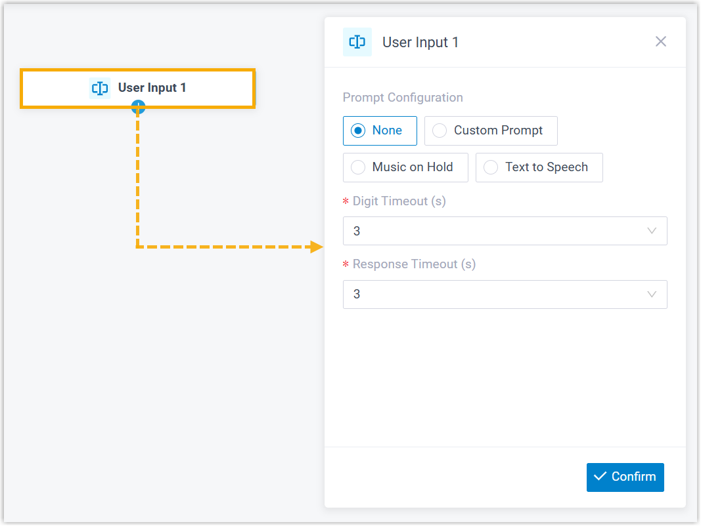
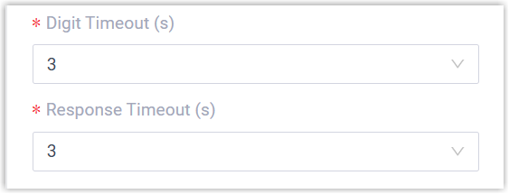

User Input
This topic provides an overview of the User Input component, and describes its configuration as well as supported component connections.
Component introduction
User Input component allows you to collect DTMF digits from callers, typically used with Condition component to process user input and route calls.
You can configure when the system stops collecting DTMF digits - either when reaching digit or response timeout or when callers press an end key. Additionally, audio prompt(s) or a text-to-speech message can be set to prompt callers for input.
- Supported prompt types
-
Prompt Type Description Custom Prompt Choose from existing custom prompts, or create a new one by recording with an extension or uploading an audio file. Music on Hold (MoH) Choose from existing MoH. Note: Before you begin, make sure the desired MoH is configured in .
Text to Speech (TTS) Enter the desired text, which will be converted to speech in the selected language and voice style.
Note: Before you begin, make sure the Text-to-Speech feature is enabled in .
- Supported end keys
#key or*key.
Component configuration
- After adding User Input component to a call flow, click
User Input component to proceed with the
configuration.

- Optional: Add audio prompt(s) or a text-to-speech message to instruct callers.
Item Instruction Custom Prompt 
- Click Custom Prompt.
- Specify custom prompt(s).Note: A maximum of 5 custom prompts is supported.
- To choose from an existing prompt, select it from the drop-down list of Prompt.
- To use a new prompt, click Record
New to record prompt with an
extension, or click Upload
to upload an audio file.Note: The new prompt will be saved in .
- Optional: To play the custom prompt in
a loop, select the checkbox of Enable
Loop Playback.Note: The looped prompt will be overridden if the next connected component is configured with a prompt.
Music on Hold 
- Select Music on Hold.
- Select an existing MoH from the drop-down list of Music on Hold.
Note: The MoH will be overridden if the next connected component is configured with a prompt.Text to Speech (TTS) 
- Select Text to Speech.
- Complete the rest of the configurations.Note: The new TTS message will be saved to the system and synchronized to .
- Configure the timeout for user input.

- Digit Timeout(s): Set how long to wait for the
caller to enter the next digit.
You can select a value from the drop-down list, or enter a value between 1 and 9999.
- Response Timeout(s): Set how long to wait for the
caller to operate.
You can select a value from the drop-down list, or enter a value between 1 and 9999.
- Digit Timeout(s): Set how long to wait for the
caller to enter the next digit.
- Click Confirm.
The selected prompt will appear on the component.

Component connections
User Input component can be connected to one component, which can be any of the supported components.